소방설비산업기사(기계) (2019-09-21 기출문제)
1과목: 소방원론
1. 화재 발생 시 물을 소화약제로 사용할 수 있는 것은?
- 칼슘카바이드
- 무기 과산화물류
- 마그네슘 분말
- 염소산염류
(정답률: 64%)

2. 다음 중 가스계 소화약제가 아닌 것은?
- 포 소화약제
- 청정 소화약제
- 이산화탄소 소화약제
- 할로겐화합물 소화약제
(정답률: 74%)
3. 건축물 화재 시 플래시오버(flash over)에 영향을 주는 요소가 아닌 것은?
- 내장재료
- 개구율
- 화원의 크기
- 건물의 층수
(정답률: 79%)
4. 연기의 물리ㆍ화학적인 설명으로 틀린 것은?
- 화재 시 발생하는 연소생성물을 의미한다.
- 연기의 색상은 연소물질에 따라 다양하다.
- 연기의 기체로만 이루어진다.
- 연기의 감광계수가 크면 피난 장애를 일으킨다.
(정답률: 84%)
5. 물의 물리ㆍ화학적 성질에 대한 설명으로 틀린 것은?
- 수소결합성 물질로서 비점이 높고 비열이 크다.
- 100℃의 액체 물이 100℃의 수증기로 변하면 체적이 약 1600배 증가한다.
- 유류화재에 물을 무상으로 주수하면 질식효과 이회에 유탁액이 생성되어 유화효과가 나타난다.
- 비극성 공유 결합성 물질로 비점이 높다.
(정답률: 66%)
6. 자연발화의 조건으로 틀린 것은?
- 열전도율이 낮을 것
- 발열량이 클 것
- 주의의 온도가 높을 것
- 표면적이 작을 것
(정답률: 71%)
7. 제4류 위험물 중 제1석유류, 제2석유류, 제3석유류, 제4석유류를 각 품명 별로 구분하는 분류의 기준은?
- 발화점
- 인화점
- 비중
- 연소범위
(정답률: 88%)
8. 질식소화방법에 대한 예를 설명한 것으로 옳은 것은?
- 열을 흡수할 수 있는 매체를 화염 속에 투입한다.
- 열용량이 큰 고체물질을 이용하여 소화한다.
- 중질유 화재 시 물을 무상으로 분무한다.
- 가연성기체의 분출화제 시 주 밸브를 닫아서 연료공급을 차단한다.
(정답률: 65%)
9. 증기비중을 구하는 식은 다음과 같다. ()안에 들어갈 알맞은 값은?
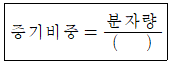
- 15
- 21
- 22.4
- 29
(정답률: 77%)
10. 알루미늄 분말 화재 시 적응성이 있는 소화약제는?
- 물
- 마른모래
- 포말
- 강화액
(정답률: 84%)
11. 화씨온도 122°F는 섭씨온도로 몇 ℃인가?
- 40
- 50
- 60
- 70
(정답률: 78%)
12. 제1류 위험물로서 그 성질이 산화성고체인 것은?
- 셀륨로이드류
- 금속분류
- 아염소산염류
- 과염소산
(정답률: 75%)
13. 폭발에 대한 설명으로 틀린 것은?
- 보일러 폭발은 화학적 폭발이라 할 수 없다.
- 분무 폭발은 기상 폭발에 속하지 않는다.
- 수증기 폭발은 기상 폭발에 속하지 않는다.
- 화약류 폭발은 화학적 폭발이라 할 수 있다.
(정답률: 61%)
14. 부피비로 질소가 65%, 수소가 15% 이산화탄소가 20%로 혼합된 전압이 760mmHg 기체가 있다. 이때 질소의 분압은 약 몇 mmHg인가? (단, 모두 이상기체로 간주한다.)
- 152
- 252
- 394
- 494
(정답률: 49%)
15. 할로겐화합물 소화약제로부터 기대할 수 있는 소화작용으로 틀린 것은?
- 부촉매작용
- 냉각작용
- 유화작용
- 질식작용
(정답률: 59%)
16. 건축물에 화재가 발생할 때 연소확대를 방지하기 위한 계획에 해당되는 않는 것은?
- 수직계획
- 입면계획
- 수평계획
- 용도계획
(정답률: 68%)
17. 산소와 질소의 혼합물인 공기의 평균 분자량은? (단, 공기는 산소 21vol%, 질소 79vol%로 구성되어 있다고 가정한다.)
- 30.84
- 29.84
- 28.84
- 27.84
(정답률: 72%)
18. 고가의 압력탱크가 필요하지 않아서 대용량의 포 소화설비에 채용되는 것으로 펌프의 토출관에 압입기를 설치하여 포 소화약제 압입용 펌프로 포 소화약제를 압입시켜 혼합하는 방식은?
- 프레셔 프로포셔너 방식(pressure proportioner type)
- 프레셔 사이드 프로포셔너 방식(pressure side proportioner type)
- 펌프 프로포셔너 방식(pump proportioner type)
- 라이 프로포셔너 방식(line proportioner type)
(정답률: 64%)
19. 전기화재가 발생되는 발화 요인으로 틀린 것은?
- 역률
- 합선
- 누전
- 과전류
(정답률: 84%)
20. 제1석유류는 어떤 위험물에 속하는가?
- 산화성 액체
- 인화성 액체
- 자기반응성 물질
- 금수성 물질
(정답률: 71%)
2과목: 소방유체역학
21. 다음 중 이상유체(ideal fluid)에 대한 설명으로 가장 적합한 것은?
- 점성이 없는 유체
- 압축성이 없는 유체
- 점성과 압축성이 없는 유체
- 뉴턴의 점성법칙을 만족하는 유체
(정답률: 68%)
22. 저장용기에 압력이 800kPa이고, 도가 80℃인 이산화탄소가 들어 있다. 이산화탄소의 비중량(N/m3)은? (단, 일반기체상수는 8314J/kmolㆍK이다.)
- 113.4
- 117.6
- 121.3
- 125.4
(정답률: 47%)
23. 관 속에 물이 흐르고 있다. 피토-정압관을 수은이 든 U자관에 연결하여 전압과 정압을 측정하였더니 20mm의 액면 차가 생겼다. 피토-정압관의 위치에서의 유속(m/s)은? (단, 수은의 비중은 13.6이고, 유량계수는 0.9이며, 유체는 정상상태, 비점성, 비압축성 유동이라고 가정한다.)
- 2.0
- 3.0
- 11.0
- 12.0
(정답률: 40%)
24. 옥내소화전용 소방펌프 2대를 직렬로 연결하였다. 마찰손실을 무시할 때 기대할 수 있는 효과는?
- 펌프의 양정은 증가하나 유량은 감소한다.
- 펌프의 유량은 증대하나 양정은 감소한다.
- 펌프의 양정은 증가하나 유량과는 무관하다.
- 펌프의 유량은 증대하나 양정과는 무관하다.
(정답률: 60%)
25. 15℃의 물 24kg과 80℃의 물 85kg을 혼합한 경우, 최종 물의 온도(℃)는?
- 32.8
- 42.5
- 65.7
- 75.5
(정답률: 50%)
26. 안지름이 2cm인 원관 내에 물을 흐르게 하여 층류 상태로부터 점차 유속을 빠르게 하여 완전 난류 상태로 될 때의 한계유속(cm/s)은? (단, 물의 동점성계수는 0.01cm2/s, 완전 난류가 되는 임계레이놀즈수는 4000이다.)
- 10
- 15
- 20
- 40
(정답률: 60%)
27. 물의 체적을 2% 축소시키는 데 필요한 압력(MPa)은? (단, 물의 체적탄성계수는 2.08GPa이다.)
- 32.1
- 41.6
- 45.4
- 52.5
(정답률: 55%)
28. 가로 80cm, 세로 50cm이고 300℃로 가열된 평판에 수직한 방향으로 25℃의 공기를 불어주고 있다. 대류 열전달계수가 25W/m2ㆍK일 때 공기를 불어넣는 면에서의 열전달률(kW)은?
- 2.04
- 2.75
- 5.16
- 7.33
(정답률: 59%)
29. 그림과 같이 속도 V인 자유제트가 곡면에 부딪혀 θ의 각도로 유동방향이 바뀐다. 유체가 곡면에 가하는 힘의 x,y 성분의 크기인 Fx와 Fy는 θ가 증가함에 따라 각각 어떻게 되겠는가? (단, 유동단면적은 일정하고 0°＜θ＜90°이다.)
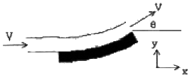
- Fx: 감소한다. Fy: 감소한다.
- Fx: 감소한다. Fy: 증가한다.
- Fx: 증가한다. Fy: 감소한다.
- Fx: 증가한다. Fy: 증가한다.
(정답률: 53%)
30. 간격이 10mm인 평행한 두 평판 사이에 점성계수가 8x10-2N ㆍs/m2인 기름이 가득 차있다. 한쪽 판이 정지된 상태에서 다른 판이 6m/s의 속도로 미끄러질 때 면적 1m2당 받는 힘(N)은? (단, 평판 내 유체의 속도분포는 선형적이다.)
- 12
- 24
- 48
- 96
(정답률: 46%)
31. 안지름이 5mm인 원형 직선 관 내에 0.2×10-3m3/min의 물이 흐르고 있다. 유량을 두 배로 하기 위해서는 직선 관 양단의 압력차가 몇 배가 되어야 하는가? (단, 물의 동점성계수는 10-6m2/s이다.)
- 1.14배
- 1.41배
- 2배
- 4배
(정답률: 32%)
32. 세 액체가 그림과 같은 U자관 들어있을 때, 가운데 유체 S2의 비중은 얼마인가? (단, 비중 S1=1, S3=2, h1=20cm, h2=10cm, h3=30cm이다.)
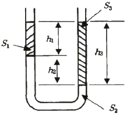
- 1
- 2
- 4
- 8
(정답률: 43%)
33. 물이 들어가 있는 그림과 같은 수조에서 바닥에 지름 D의 구멍이 있다. 모든 손실과 표면 장력의 영향을 무시할 때, 바닥 아래 y지점에서의 분류 반지름 t의 값은? (단, H는 일정하게 유지된다고 가정한다.)
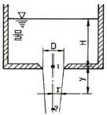
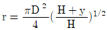
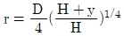
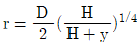
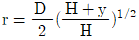
(정답률: 39%)
34. 온도가 20℃이고, 압력이 100kPa인 공기를 가역단열 과정으로 압축하여 체적을 30%로 줄였을 때의 압력(KPa)은? (단, 공기의 비열비는 1.4이다.)
- 263.9
- 324.5
- 403.5
- 539.5
(정답률: 33%)
35. 유효낙차가 65m이고 유량이 20m3/s인 수력발전소에서 수차의 이론 출력(kW)은?
- 12740
- 1300
- 12.74
- 1.3
(정답률: 46%)
36. 내경이 D인 배관에 비압축성 유체인 물이 V의 속도로 흐르다가 갑자기 내경이 3D가 되는 확대관으로 흘렀다. 확대된 배관에서 물의 속도는 어떻게 되는가?
- 변화 없다.
- 1/3로 줄어든다.
- 1/6로 줄어든다.
- 1/9로 줄어든다.
(정답률: 65%)
37. 그림에서 수문의 길이는 1.5m이고 폭은 1m이다. 유체의 비중(s)이 0.8일 때 수문에 수직방향으로 작용하는 압력에 의한 힘F(kN)의 크기는?
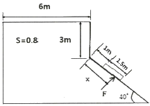
- 96.9
- 75.5
- 60.2
- 48.5
(정답률: 32%)
38. 관로의 손실에 관한 내용 중 등가길이의 의미로 옳은 것은?
- 부차적 손실과 같은 크기의 마찰 손실이 발생할 수 있는 직관의 길이
- 배관 요소 중 곡관에 해당하는 총길이
- 손실계수에 손실 수두를 곱한 값
- 배관시스템의 밸브, 벤드, 티 증 추가적 부품의 총길이
(정답률: 62%)
39. 다음 중 캐비테이션(공동현상) 방지방법으로 옳은 것은 모두 고른 것은?
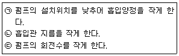
- ㉠, ㉡
- ㉠, ㉢
- ㉡, ㉢
- ㉡, ㉡, ㉢
(정답률: 64%)
40. 중력가속도가 10.6m/s2인 곳에서 어떤 금속체의 중량이 100N이었다. 중력가속도가 1.67m/s2인 달 표면에서 이 금속체의 중량(N)은?
- 13.1
- 14.2
- 15.8
- 17.2
(정답률: 49%)
3과목: 소방관계법규
41. 화재예방, 소방시설 설치ㆍ유지 및 안전관리에 관한 법령상 무창층으로 판정하기 위한 개구부가 갖추어야 할 요건으로 틀린 것은?
- 크기는 반지름 30cm 이상의 원리 내접할 수 있을 것
- 해당 층의 바닥면으로부터 개구부 밑 부분까지 높이가 1.2m 이내일 것
- 도로 또는 차량이 진입할 수 있는 빈터를 향할 것
- 화재 시 건축물로부터 쉽게 피난할 수 있도록 창살이나 그 밖의 장애물이 설치되지 아니할 것
(정답률: 70%)
42. 화재안전기준을 달리 적용하여야 하는 특수한 용도 또는 구조를 가진 특정소방대상물인 원자력발전소, 핵폐기물처리시설에 설치하지 아니할 수 있는 소방시설은?
- 옥내소화전설비 및 소화용수설비
- 연결송수관설비 및 연결살수설비
- 옥내소화전설비 및 자동화재탐지설비
- 스프링클러설비 및 물분무등소화설비
(정답률: 64%)
43. 시장지역에서 화재로 오인할 만한 우려가 있는 불을 피우거나 연막 소독을 한 자가 소방본부장 또는 소방서장에게 신고를 하지 아니하여 소방자동차를 출동하게 한 때에 과태료 부과 금액 기준으로 옳은 것은?
- 20만원 이하
- 50만원 이하
- 100만원 이하
- 200만원 이하
(정답률: 61%)
44. 제조소등의 설치허가 또는 변경허가를 받고자 하는 자는 설치허가 또는 변경허가신청서에 행정안전부형으로 정하는 서류를 첨부하여 누구에게 제출하여야 하는가?
- 소방본부장
- 소방서장
- 소방청장
- 시ㆍ도지사
(정답률: 74%)
45. 소방기본법상 관계인의 소방활동을 위한하여 정당한 사유없이 소방대가 현장에 도착할 때까지 사람을 구출하는 조치 또는 불을 끄거나 불이 번지지 아니하도록 하는 조치를 하지 아니한 자에 대한 벌칙으로 옳은 것은?
- 100만원 이하의 벌금
- 200만원 이하의 벌금
- 300만원 이하의 벌금
- 1000만원 이하의 벌금
(정답률: 44%)
46. 소방기본법령상 대통령령으로 정하는 특수가연물의 품명별 수량의 기준으로 옳은 것은?
- 가연성고체류:2m3 이상
- 목재가공품 및 나뭅부스러기:5m3 이상
- 석탄ㆍ목탄류:3000kg 이상
- 면화류:200kg 이상
(정답률: 66%)
47. 위험물안전관리법령상 위험물 및 지정수량에 대한 기준 중 다음()안에 알맞은 것은?
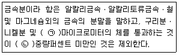
- ㉠ 150, ㉡ 50
- ㉠ 53 ㉡ 50
- ㉠ 50, ㉡ 150
- ㉠ 50, ㉡ 53
(정답률: 60%)
48. 특정소방대상물의 소방시설 등에 대한 자체점검 기술자격자의 범위에서 ‘행정안전부령으로 정하는 기술자격자’는?
- 소방안전관리자로 선임된 소방설비산업기사
- 소방안전관리자로 선임된 소방설비기사
- 소방안전관리자로 선임된 전기기사
- 소방안전관리자로 선임된 소방시설관리사 및 소방기술사
(정답률: 72%)
49. 화재예방, 소방시설 설치ㆍ유지 및 안전관리에 관한 법령에서 정하는 소방시설이 아닌 것은?
- 캐비닛형 자동소화장치
- 이산화탄소소화설비
- 가스누설경보기
- 방열성물질
(정답률: 63%)
50. 위험물안전관리법령에서 정하는 제3류 위험물에 해당하는 것은?
- 나트륨
- 염소산염류
- 무기과산화물
- 유기과산화물
(정답률: 67%)
51. 성능위주설계를 할 수 있는 자의 기술인력에 대한 기준으로 옳은 것은?
- 소방기술사 1명 이상
- 소방기술사 2명 이상
- 소방기술사 3명 이상
- 소방기술사 4명 이상
(정답률: 60%)
52. 소방안전관리자의 업무라고 볼 수 없는 것은?
- 소방계획서의 작성 및 시행
- 화재경계지구의 지정
- 자위소방대의 구성ㆍ운영ㆍ교육
- 피난시설, 방화구획 및 방화시설의 유지ㆍ관리
(정답률: 67%)
53. 소방시설공자업자는 소방시설착공신고서의 중요한 사항이 변경된 경우에는 해당서류를 첨부하여 변경일로부터 며칠 이내에 소방본부장 또는 소방서장에게 신고하여야 하는가?
- 7일
- 15일
- 21일
- 30일
(정답률: 44%)
54. 위험물안전관리법령상 제조소 또는 일반 취급소의 위험물취급탱크 노즐 또는 맨홀을 신설하는 경우, 노즐 또는 맨홀의 직경이 몇 mm를 초과하는 경우에 변경허가를 받아야 하는가?
- 250
- 300
- 450
- 600
(정답률: 51%)
55. 화재예방, 소방시설 설치ㆍ유지 및 안전관리에 관한 법령에서 정하는 특정소방대상물의 분류로 틀린 것은?
- 커지노영엽소-위락시설
- 박물관-문화 및 집회시설
- 물류터미널-운수시설
- 변전소-업무시설
(정답률: 52%)
56. 소방기본법상 소방의 역사화 안전문화를 발전시키고 국민의 안전의식을 높이기 위하여 소방체험관을 설립하여 운영할 수 있는 자는? (단, 소방체험관은 화재 현장에서의 피난 등을 체험할 수 있는 체험관을 말한다.)
- 행정안전부장관
- 소방청장
- 시ㆍ도지사
- 소방본부장
(정답률: 63%)
57. 특정소방대상물의 건축ㆍ대수선ㆍ용도변경 또는 설치 등을 위한 공사를 시공하는 자가 공사현장에서 인화성 물품을 취급하는 작업 등 대통령령으로 정하는 작업을 하기 전에 설치하고 유지ㆍ관리해야 하는 임시소방시설의 종류가 아닌 것은? (단. 용접ㆍ용단 등 불꽃을 발생시키거나 화기를 취급하는 작업이다.)
- 간이소화장치
- 비상경보장치
- 자동확산소화기
- 간이피난유도선
(정답률: 55%)
58. 보일러, 난로, 건조설비, 가스ㆍ전기시설, 그 밖의 화재 발생 우려가 있는 설비 또는 기구 등의 위치ㆍ구조 및 관리와 화재예방을 위하여 불을 사용할 때 지켜야 하는 사항은 다음 중 어느 것으로 정하는가?
- 대통령령
- 총리령
- 행정안전부령
- 소방청훈령
(정답률: 62%)
59. 다음 중 화재경계지구의 지정대상 지역과 가장 거리가 먼 것은?
- 공장지역
- 시장지역
- 목조건물이 밀집한 지역
- 소방용수시설이 없는 지역
(정답률: 51%)
60. 다음 중 1급 소방안전관리대상물이 아닌 것은?
- 연면적 15000m2 이상인 공장
- 층수가 11층 이상인 업무시설
- 지하구
- 가연성 가스를 1000톤 이상 저장ㆍ취급하는 시설
(정답률: 64%)
4과목: 소방기계시설의 구조 및 원리
61. 다음은 특정소방대상물별 소화기구의 능력단위기준에 대한 설명이다. ()안에 들어갈 내용으로 알맞은 것은?
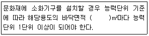
- 30
- 50
- 100
- 200
(정답률: 50%)
62. 일반적인 산알칼리 소화기를 약제방출압력원에 대한 설명으로 옳은 것은?
- 산과 알칼리의 화학반응에 이해 생성된 CO2의 압력이다.
- 소화기 내부의 질소가스 충전압력이다.
- 소화기 내부의 이산화탄소 충전압력이다.
- 수동펌프를 주고 이용하고 있다.
(정답률: 49%)
63. 다음 중 입원실이 있는 3층 조산원에 대한 피난기구의 적응성으로 가장 거리가 먼 것은?
- 미끄럼대
- 승강기피난기
- 피난용트랩
- 공기안전매트
(정답률: 64%)
64. 소화설비에 대한 설명으로 틀린 것은?
- 물분무소화설비는 제4류의 위험물을 소화할 수 있는 물입자를 방사한다.
- 증류범위가 넓어 끓어 넘치는 위험이 있는 물질을 저장 또는 취급 하는 장소에는 물분무 헤드를 설치하지 아니할 수 있다.
- 주차장에는 물분무소화설비를, 통신기기실에는 스프링클러설비를 설치하여야 한다.
- 폐쇄형스프링클러헤드는 그 자체가 자동화재 탐지장치의 역할을 할 수 있으나 개방형은 그렇지 못하다.
(정답률: 68%)
65. 제연설비의 설치 시 아연도금강판으로 제작된 배출풍도 단면의 긴 변이 400mm인 경우 (㉠)와 2500mm인 경우(㉡), 강판의 최소 두께는 각각 몇 mm인가?
- ㉠ 0.4, ㉡ 1.0
- ㉠ 0.5, ㉡ 1.0
- ㉠ 0.5, ㉡ 1.2
- ㉠ 0.6, ㉡ 1.2
(정답률: 56%)
66. 호스릴분말소화설비의 설치기준으로 틀린 것은?
- 소화약제의 저장용기는 호스릴 설치하는 장소마다 설치할 것
- 방호대상물의 각 부분으로부터 하나의 호스접결구까지의 수평거리가 15m이하가 되도록 할 것
- 소화약제의 저장용기의 개발밸브는 호스릴의 설치장소에서 자동으로 개폐할 수 있는 것으로 할 것
- 저장용기에는 그 가까운 곳의 보기 쉬운 곳에 적색의 표시등을 설치하고, 이동식분말소화설비가 있다는 뜻을 표시한 표지를 할 것
(정답률: 61%)
67. 할론 1301을 전역방출방식으로 방사할 때 분사헤드의 최소 방사압력(MPa)은?
- 0.1
- 0.2
- 0.9
- 1.⑤
(정답률: 55%)
68. 폐쇄형스프링클러헤드를 사용하는 설비에서 하나의 방호구역의 바닥면적의 기준은 몇 m2이하인가? (단, 격자형배관방식을 채택하지 않는다.)
- 1500
- 2000
- 2500
- 3000
(정답률: 53%)
69. 포소화설비에서 부상지붕구조의 탱크에 상포주입법을 이용한 포방출구 형태는?
- I형 방출구
- Ⅱ형 방출구
- 특형 방출구
- 표면하주입식 방출구
(정답률: 53%)
70. 분말소화설비에 사용하는 소화약제 중 제3종 분말의 주성분으로 옳은 것은?
- 인산염
- 탄산수소칼륨
- 탄산수소나트륨
- 요소
(정답률: 70%)
71. 다음 시설 중 호스릴포소화설비를 설치할 수 있는 소방 대상물은?
- 완전 밀폐된 주차장
- 지상 1층으로서 지붕이 있는 부분
- 주된 벽이 없고 기둥뿐인 고가 및의 주차장
- 바닥면적 합계가 1000m2 미만인 항공기 격납고
(정답률: 54%)
72. 소화용수 설비의 소요수량이 40m3 이상 100m3미만인 경우에 채수구는 몇 개를 설치하여야 하는가?
- 1
- 2
- 3
- 4
(정답률: 63%)
73. 1개 층의 거실면적이 400m2이고 복도면적이 300m2인 소방대상물에 제연설비를 설치할 경우, 제연구역은 최소 몇 개인가?
- 1
- 2
- 3
- 4
(정답률: 60%)
74. 습식스프링클러설비외의 배관설비에는 헤드를 향하여 상향으로 경사를 유지하여야 한다. 이 떄 수평주행배관의 최소 기울기는?
- 1/500
- 1/250
- 1/100
- 2/100
(정답률: 65%)
75. 소화펌프의 원활한 기동을 위하여 설치하는 물올림 장치가 필요한 경우는?
- 수원의 수위가 펌프보다 높을 경우
- 수원의 수위가 펌프보다 낮을 경우
- 수원의 수위가 펌프와 수평일 때
- 수원의 수위와 관계없이 설치
(정답률: 72%)
76. 특정소방대상물의 용도 및 장소별로 설치해야 할 인명구조기구의 기준으로 틀린 것은?
- 지하가 중 지하상가는 공기 호흡기를 층마다 2개 이상 비치할 것
- 문화 및 집회시설 중 수용인원 100명 이상의 영화상영관은 공기호흡기를 층마다 2개 이상 비치할 것
- 물분무등소화설비 중 이산화탄소 소화설비를 설치해야 하는 특정소방대상물은 공기호흡기를 이산화탄소 소화설빕가 설치된 장소의 출입구 외부 인근에 1대 이상 비치할 것
- 지하층을 포함하는 층수가 7층 이상인 관광호텔은 방열복 또는 방화복, 공기호흡기, 인공소생기를 각 1개 이상 비치할 것
(정답률: 54%)
77. 연결송수관설비 방수구의 설치기준에 대한 내용이다. 다음 ()안에 들어갈 내용으로 알맞은 것은? (단, 집회장ㆍ관람장ㆍ백화점ㆍ도매시장ㆍ소매시장ㆍ판매시설ㆍ공장ㆍ창고시설 또는 지하가를 제외한다.)
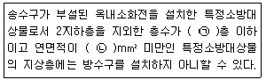
- ㉠ 4, ㉡ 6000
- ㉠ 5, ㉡ 6000
- ㉠ 4, ㉡ 3000
- ㉠ 5, ㉡ 3000
(정답률: 40%)
78. 최대 방수구역의 바닥면적이 60m2인 주차장에 물분무소화설비를 설치하려고 하는 경우 수원의 최소 저수량은 몇 m3인가?
- 12
- 16
- 20
- 24
(정답률: 47%)
79. 유량을 토출하여 펌프를 시험할 때 성능시험 배관의 밸브를 막고 연속으로 운전할 경우 자동적으로 개방되는 것은 어느 밸브인가?
- 후드밸브
- 릴리프밸브
- 시험밸브
- 유량조절밸브
(정답률: 57%)
80. 이산화탄소소화설비의 수동식 기동장치에 대한 설치기준으로 틀린 것은?
- 전기를 사용하는 기동장치에는 전원표시등을 설치할 것
- 전역방출방식은 방호구역마다, 국소방출방식은 방호대상물마다 설치할 것
- 해당방호구역의 출입구부분 등 조작을 하는 자가 쉽게 피난할 수 있는 장소에 설치할 것
- 기동장치의 조작부는 바닥으로부터 높이 0.5m 이상 0.8m 이하의 위치에 설치하고, 보호판 등에 따른 보호장치를 설치할 것
(정답률: 66%)